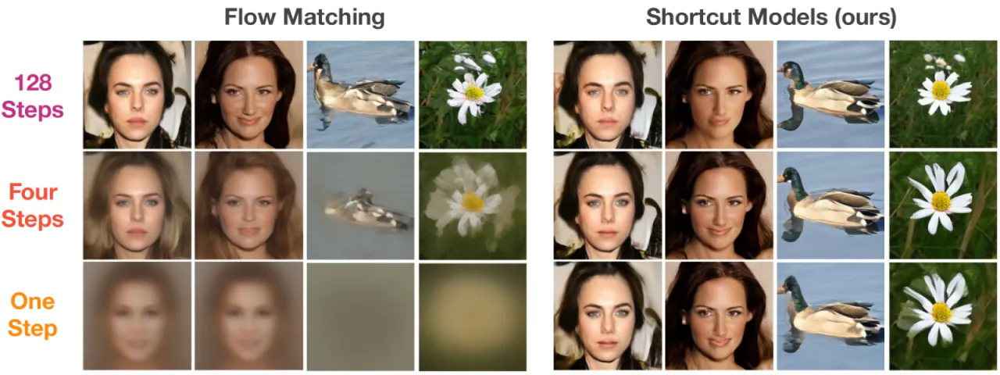
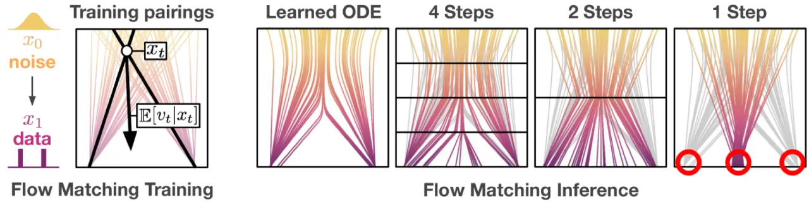
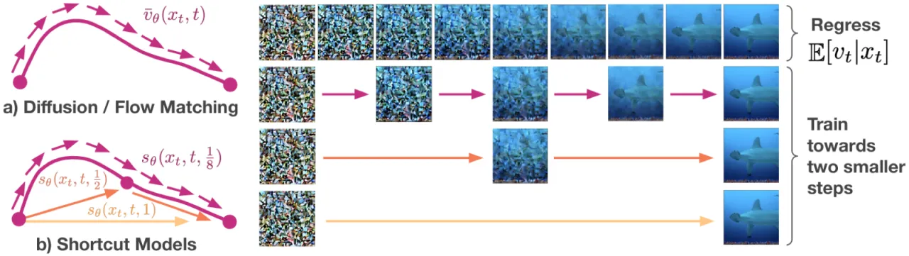
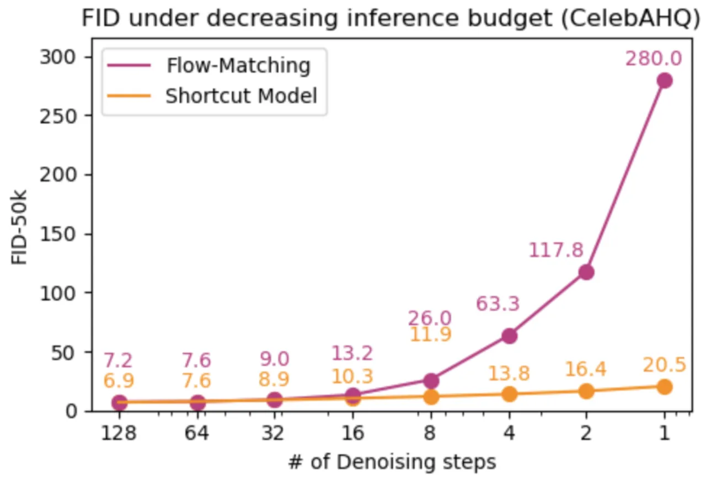
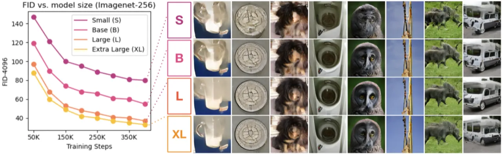
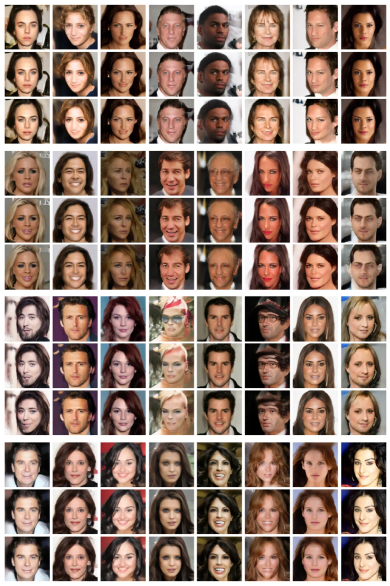
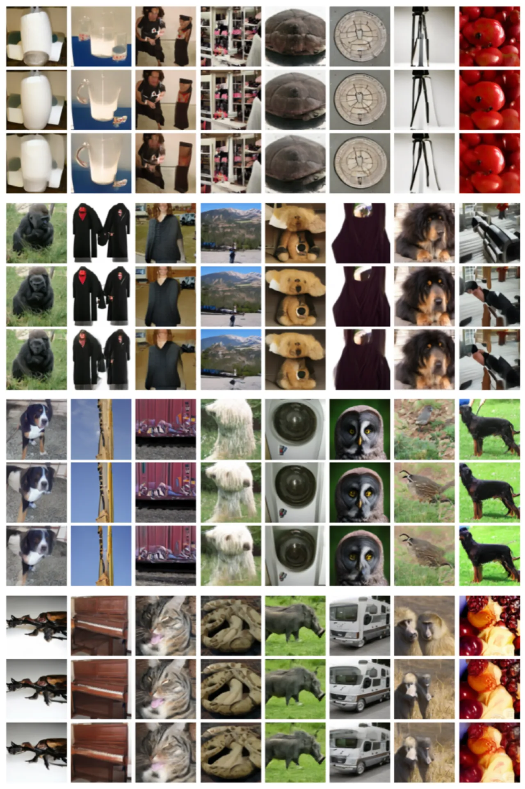
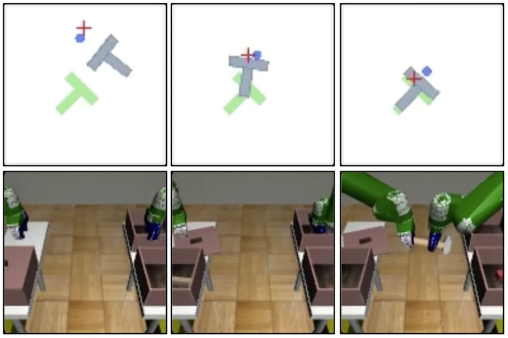
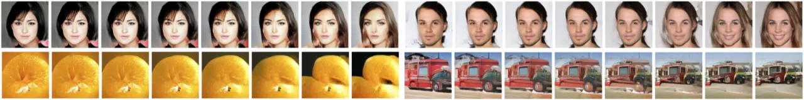

扩散模型需要数十至数百次神经网络前向传播才能生成样本，推理缓慢且计算代价高昂。 Shortcut Models 通过让网络同时感知噪声水平和目标步长，实现了在单个或少数步骤内生成高质量样本， 且无需单独的蒸馏阶段，仅需约 16% 的额外训练计算开销。
扩散模型和流匹配模型在图像生成中取得了显著成果，但其迭代去噪过程需要数十到数百次神经网络前向传播， 导致推理极为缓慢。现有的加速方案（如蒸馏、一致性模型）往往需要复杂的两阶段训练流程，或在少步生成时质量大幅下降。
"Sampling from these models involves iterative denoising over many neural network passes, making generation slow and expensive." ——论文引言


Shortcut Models 在标准流匹配框架基础上，对网络输入增加了"目标步长" d。 网络不仅预测当前时刻的去噪方向（速度场），还学习如何"跨越"多个小步， 直接预测从当前状态跳跃到 t − d 位置所需的归一化方向。 训练结合两个目标：流匹配损失（精细步骤监督）和自一致性目标（粗粒度步骤监督）。

定义 shortcut 函数 v(x, t, d)：给定当前状态 x、噪声时间步 t 和目标步长 d， 输出一个方向向量，使得沿该方向走一步即可到达 t − d 时刻对应的状态。
当 d → 0 时，v 退化为标准流匹配的速度场；当 d 较大时，v 学习如何跳过中间曲折路径， 预测考虑了"未来曲率"的综合方向。
训练的核心约束来自自一致性：一个步长为 d 的大步等价于两个连续的步长 d/2 的小步。 即：
训练时，用当前网络的停止梯度（stop-gradient）版本计算两个 d/2 步的目标， 作为对大步长预测的监督信号。这使得模型能够从自身的中间预测中"自举"（bootstrapping）， 无需外部教师网络，实现了训练时的自蒸馏。
推理时，步数 N 可以任意选择：
同一个训练好的模型可以以任意步数运行，无需针对特定步数重新训练。
实验在两类任务上验证：（1）图像生成——CelebA-HQ-256（无条件）和 ImageNet-256（类别条件）， 使用 FID-50k 指标（越低越好）；（2）机器人控制——Push-T 和 Transport 任务，使用成功率评估。 基线包括：Progressive Distillation、Consistency Distillation、Reflow、Consistency Training、Live Reflow、标准 Flow Matching 等。
括号内为降质严重、质量不具竞争力的结果。Shortcut Models 各列均标注。
| 方法 | CelebA-HQ-256（无条件） | ImageNet-256（类别条件） | ||||
|---|---|---|---|---|---|---|
| 128步 | 4步 | 1步 | 128步 | 4步 | 1步 | |
| Progressive Distillation | (302.9) | (251.3) | 14.8 | (201.9) | (142.5) | 35.6 |
| Consistency Distillation | 59.5 | 39.6 | 38.2 | 132.8 | 98.01 | 136.5 |
| Reflow | 16.1 | 18.4 | 23.2 | 16.9 | 32.8 | 44.8 |
| Flow Matching (DiT-B) | 7.3 | (63.3) | (280.5) | 17.3 | (108.2) | (324.8) |
| Consistency Training | 53.7 | 19.0 | 33.2 | 42.8 | 43.0 | 69.7 |
| Live Reflow | 6.3 | 27.2 | 43.3 | 46.3 | 95.8 | 58.1 |
| Shortcut Models (本文) | 6.9 | 13.8 | 20.5 | 15.5 | 28.3 | 40.3 |
Shortcut Models 在 4 步和 1 步设置下优于所有单阶段端到端方法（Consistency Training、Live Reflow 等）， 且在多步设置下与两阶段蒸馏方法相当甚至更优。
| 模型 | 128步 FID | 4步 FID | 1步 FID |
|---|---|---|---|
| Shortcut Models (DiT-XL) | 3.8 | 7.8 | 10.6 |




将 Shortcut Models 应用于扩散策略（Diffusion Policy）的机器人控制任务， 在 Push-T 和 Transport 两个连续控制基准上与标准 100 步扩散策略对比：
| 方法 | 步数 | Push-T 成功率 | Transport 成功率 |
|---|---|---|---|
| Diffusion Policy（基线） | 100步 | ~0.85 | ~0.80 |
| Diffusion Policy（基线） | 1步 | 0.12 | 0.00 |
| Shortcut Models（本文） | 1步 | 0.87 | 0.80 |
Shortcut 策略在仅用 1 步推理时，达到与 100 步基线相当的成功率， 而标准扩散策略在 1 步时几乎完全失效（Transport 成功率为 0.00）。


论文通过消融实验验证了自一致性训练目标的必要性：去掉自一致性损失后，模型仅能在多步模式下正常工作， 在 1 步时质量退化到 Flow Matching 同等水平。 此外，实验表明不需要特别设计的训练时间表（schedule）或预热（warmup），训练过程稳定。
"The mapping between noise and data is entirely dependent on an expectation over the dataset."（论文原文） 与 GAN 或 VAE 不同，Shortcut Models 无法对噪声到数据的映射做独立的干预或调整， 生成的多样性上限受限于训练数据的分布。
"In our shortcut model implementation there remains a gap between many-step generation quality and one-step generation quality."（论文原文） 尽管 Shortcut Models 的差距远小于标准扩散模型，但 1 步的 FID 仍明显高于 128 步， 完全消除该差距仍是开放问题。
论文指出，CFG 在大步长时不能直接使用，因为"linear approximation is not appropriate"（论文原文）。 实现中只在 d=0（极小步长）时使用 CFG，大步长时必须放弃 CFG 加成， 这在一定程度上限制了 1 步生成的可控性。 此外，CFG 的比例（scale）需要在训练前指定，不能在推理时灵活调整。
训练中的自一致性目标使用当前网络的停止梯度版本作为"教师"。若当前网络在某些状态下预测质量差， 则自举目标本身也可能含有噪声，形成累积误差——这是所有 bootstrapping 方法共有的理论风险， 论文中对此未作详细分析。
主要实验集中在 CelebA-HQ-256 和 ImageNet-256 两个数据集。 在更大规模（如 LAION-级别）或更复杂的条件生成（如文本到图像）场景下的性能表现， 论文未作系统性验证。